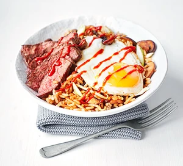

Korean Fried Rice
Ingredients
- 3 tbsp sesame oil
- 350g rump steak
- 250g mushrooms ,sliced
- 3 garlic cloves , thinly sliced
- 200g beansprouts
- 2 tbsp soy sauce
- 1 tbsp chilli sauce
- cooked rice
- bunch spring onions , sliced
- eggs
How to Make this Korean-Style Fried Rice
- Heat 1 tbsp of the oil in a frying pan over a high heat, season the steaks and cook for 2-3 mins each side.
Remove from the pan and leave to rest.
- Heat 1 tbsp oil in a separate frying pan, stir-fry the mushrooms until softened,
then stir in the garlic, beansprouts, soy and chilli sauce.
- Cook for another 2 mins, then add the cooked rice and heat through.
Stir in the spring onions and keep warm.
- Meanwhile, heat the remaining oil in the pan that you fried the steak in.
Add the eggs and fry until done to your liking.
- Slice the steaks and spoon the rice into bowls.
- Top each one with the sliced steak, an egg and a drizzle of chilli sauce.